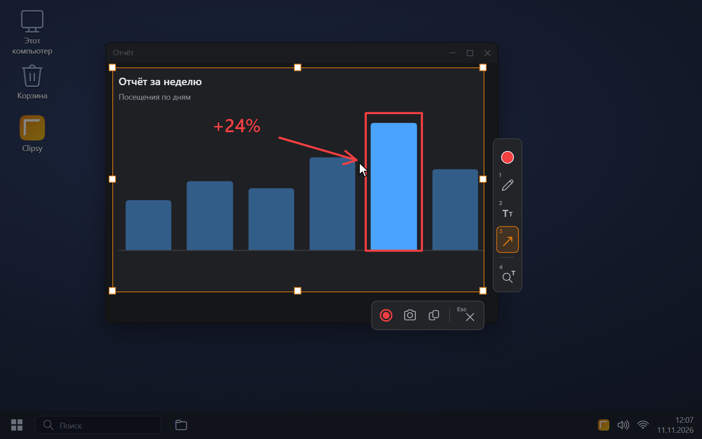
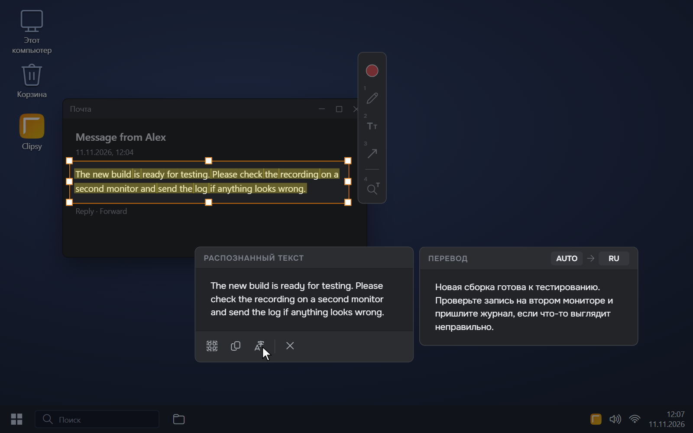
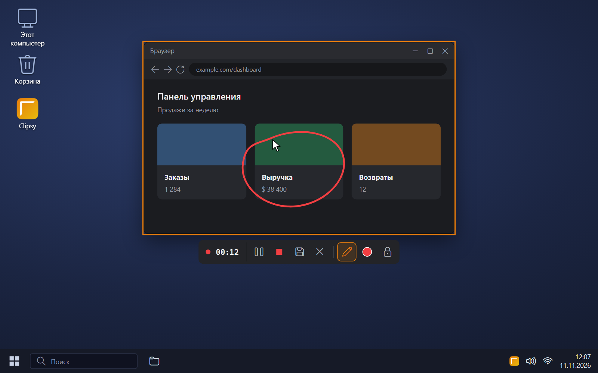
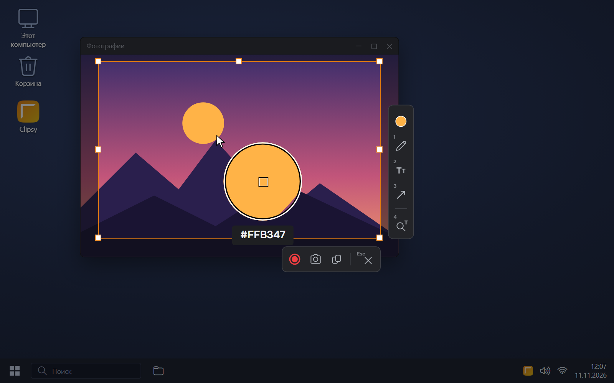
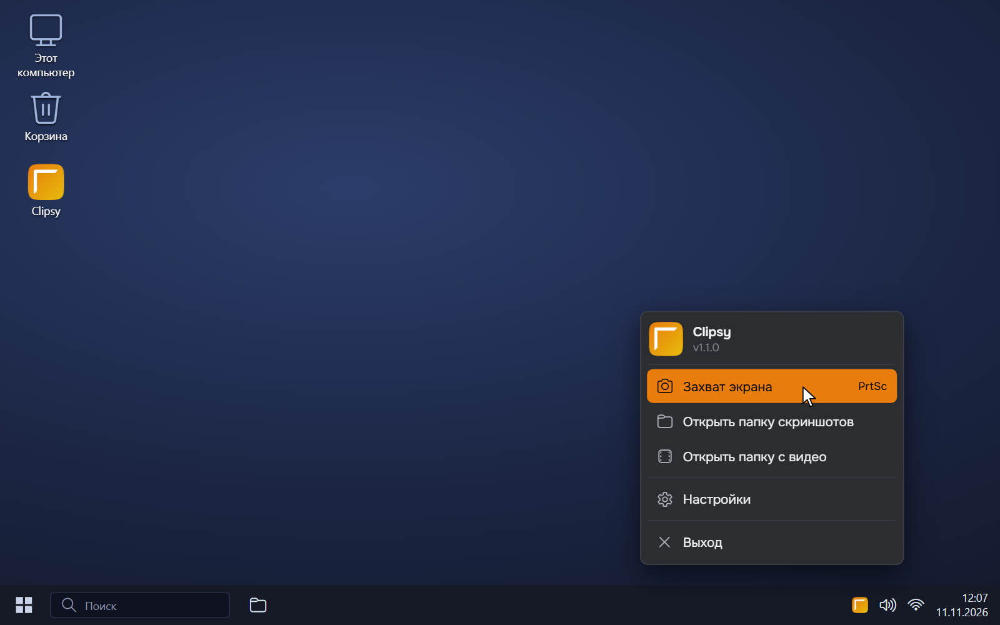
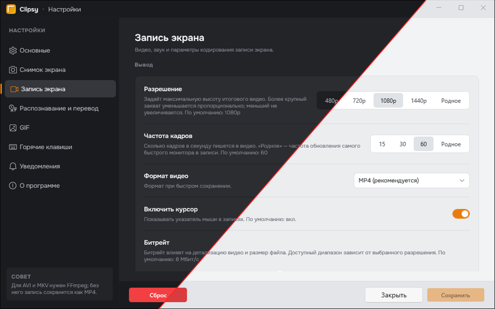

Скриншоты
Удобный захват одного или нескольких мониторов, а также отдельных приложений
Clipsy — небольшая и быстрая альтернатива «Ножницам» Windows. С ним можно сделать скриншот и сразу на нём порисовать, распознать и перевести текст с экрана, записать видео или GIF. И всё это в одном приложении!
Требования: Windows 10 (1809 и новее) или Windows 11 (21H2 и новее), 64 бита
Удобный захват одного или нескольких мониторов, а также отдельных приложений
Простой редактор прямо поверх скриншота: карандаш, фигуры, линии, стрелки и текст
Быстрый способ записать область или окно в популярные форматы видео с поддержкой рисования, записи микрофона и звука отдельных приложений
Сохранение записи в виде анимированного GIF с настройкой частоты кадров и цветов
Копирование текста прямо с экрана с возможностью перевода
Точный выбор цвета с любой точки экрана с помощью лупы
Свои сочетания клавиш вместо стандартных, включая мгновенный скриншот без оверлея
Быстрое копирование в буфер обмена или сохранение в файл с открытием папки
Оформление как в Windows или на ваш выбор
Управление скриншотами и настройками из скриптов через clipsy-cli





